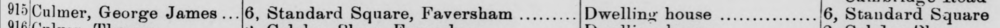
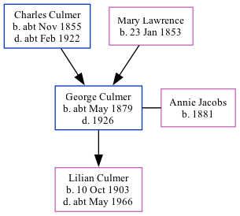

George James Culmer cMay 1879 - 1926
[ Home ] | [ Calendar ] | [ Surnames Index ] | [ Family History ]A railroad laborer and the child of Charles Culmer (a coal dealer) and Mary LawrenceGeorge Culmer, the second cousin twice-removed on the mother's side of Nigel Horne, was born in Faversham, Kent, England c. May 18791,2,3 and married Annie Jacobs (with whom he had 1 child, Lilian Agnes, ) in Faversham around Nov 19024.
George spent all of his life in Kent, England. Throughout his life, he lived in several places around the county: at 56 Tanners Street in Faversham on Apr 3, 18811 and on Apr 5, 18916; at Standard Square in Faversham on Mar 31, 19017; at 6 Standard Square in Faversham in 19065; and at 76 Abbey Street in Faversham on Apr 2, 19112.
He died in 1926 in Faversham.
Parents
- Charles was born c. Nov 1855
- Mary Ann was born on Jan 23, 1853
Children
- Lilian Agnes was born on Oct 10, 1903
Citations
- 1881 England, Wales & Scotland Census - Findmypast (was age 1 and the son of the head of the household)
- 1911 Census for England & Wales - Findmypast (was age 31 and the head of the household)
- England & Wales births 1837-2006 - Findmypast
- England & Wales Marriages 1837-2005 - Findmypast
- England & Wales, Electoral Registers 1832-1932
- 1891 England, Wales & Scotland Census - Findmypast (was age 11 and the son of the head of the household)
- 1901 England, Wales & Scotland Census - Findmypast (was age 21 and a boarder in the household)
Media
Electoral Register - 1906

1891 England, Wales & Scotland Census - GBC/1891/0005793979
England & Wales births 1837-2006 - BMD/B/1879/2/AZ/000132/293
England & Wales marriages 1837-2005 - BMD/M/1902/4/AZ/000090/313
1901 England, Wales & Scotland Census Transcription - GBC-1901-0006631977
Britain, Trade Union membership registers Transcription - GBOR-TRADEUNIONS-100480734
1911 Census for England & Wales - GBC/1911/RG14/04396/0349/1
Family Tree
Generated by ged2site. Last updated on Nov 13, 2024